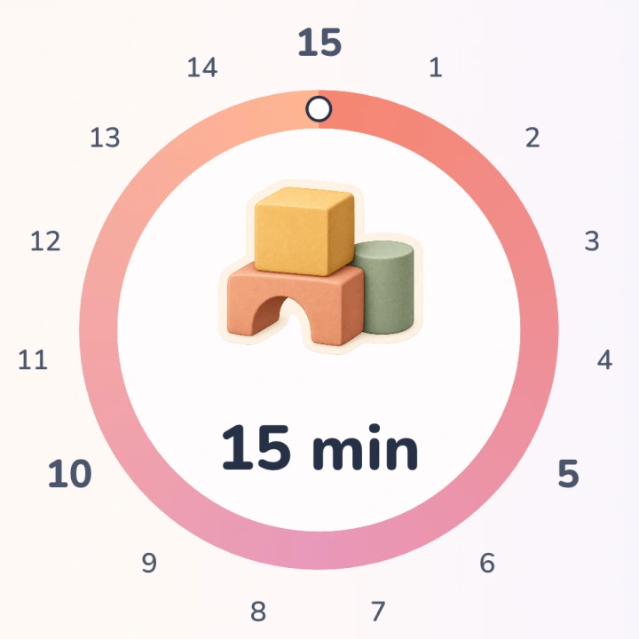
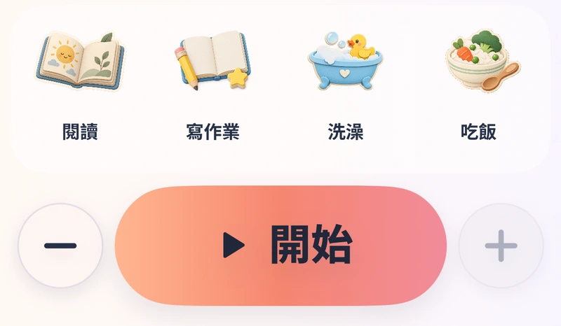
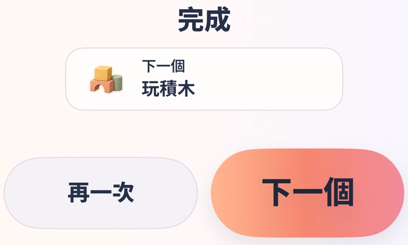
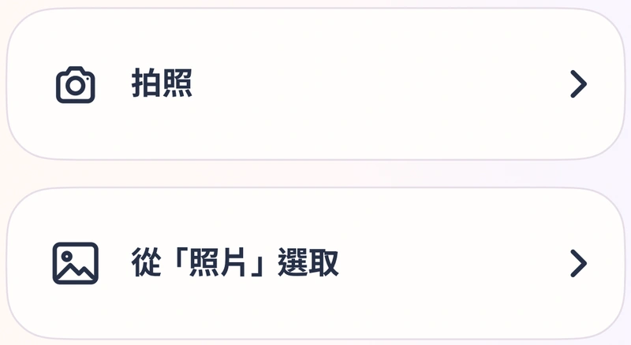
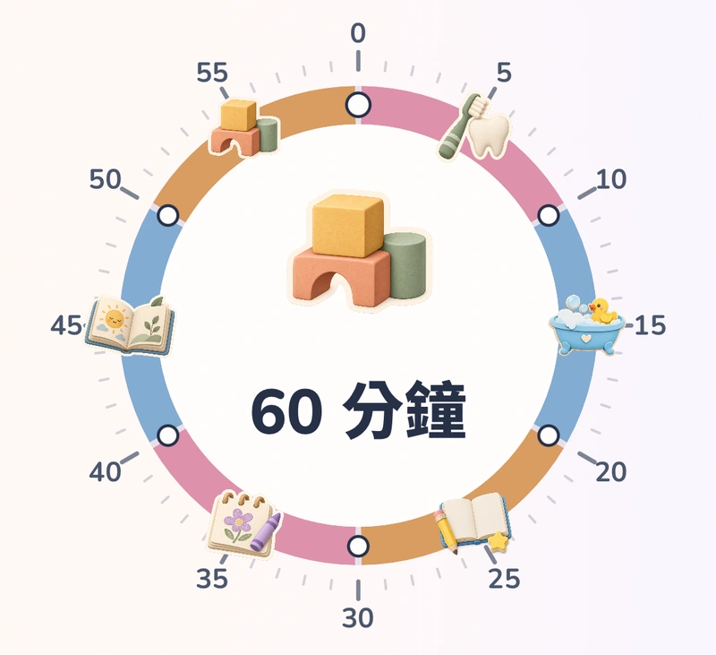
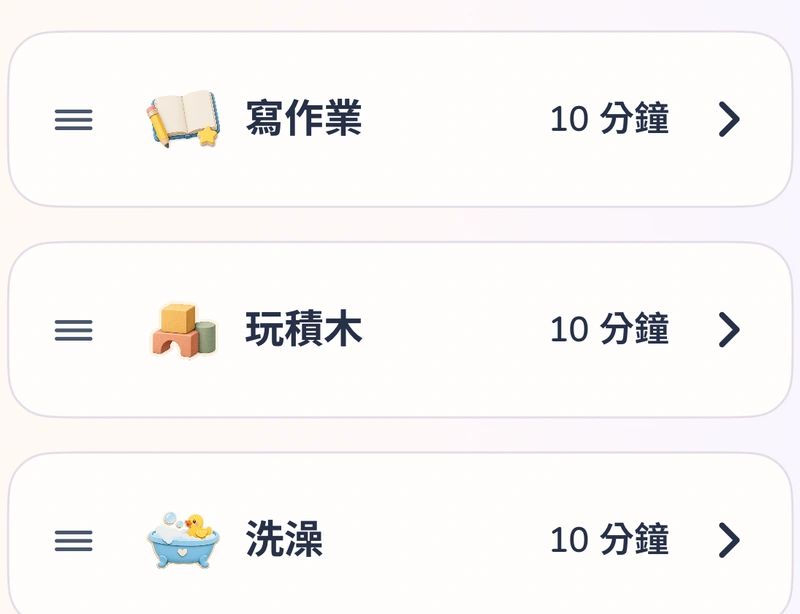

免費功能
日常需要的，已經準備好。
-

不用一直說「快一點」
讓孩子看懂時間，一次做好一件事。
-

貼上就開始
選個活動、設定時間，按下開始。
-

讓孩子決定下一步
再一次，還是換下一個？練習自己做選擇。
timoji Plus · 一次性購買
多一點自己的樣子。
-

把熟悉的日常，做成貼紙
用自己的圖片，做出熟悉的日常活動。
-

有些事，不需要趕
最長 60 分鐘，替需要慢慢來的事留點空間。
-

一起安排小日常
把熟悉的日常活動排好，下次一點就能開始。
選擇適合你的 timoji。
| 功能 | timoji免費 | timoji Plus一次性購買 |
|---|---|---|
| 視覺計時 | 15／30 分鐘 | 15／30／60 分鐘 |
| 內建活動貼紙 | 全部 | 全部 |
| 30 分鐘多活動安排 | ✓ | ✓ |
| 自訂活動貼紙 | — | ✓ |
| 小日常 | — | ✓ |
| 音效與即時動態 | ✓ | ✓ |
自訂圖片可從照片或相機匯入。Apple Image Playground 僅在支援的裝置與系統上提供。Plus 為 App 內一次性購買，無訂閱；所在地區價格以 App 內顯示為準。